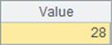

The definition
Besides using cell names directly and calling predefined program parameters, you can also use variables that have specified names. They are called cellset variables. Cellset variables are automatically created through value assignment, without having to be declared in advance, and are valid across the whole cellset. But the reference of an unassigned variable will cause errors. For example:
|
|
A |
B |
|
1 |
>a=5 |
>b=[1,3,2] |
|
2 |
=a+3 |
=b.(~+a) |
A1 and B1 define cellset variables a and b respectively to be called from A2 and B2. After computation, the results of A2 and B2 are as follows:


The cellset variables that are already defined and their values can be viewed in page Cellset variable in the bottom right of the interface:

The program parameters defined by the cellset program will also be displayed in this list.
Judging variables
esProc uses ifv function to check if a variable has been defined. For example:
|
|
A |
B |
|
1 |
>a=5 |
>b=[1,3,2] |
|
2 |
|
|
|
3 |
if ifv(a) |
>A2=b.(~+a) |
|
4 |
else |
>B2=b |
The third and fourth lines of code assign values to A2 and B2 respectively. Only A2 has result:

B2 is empty.